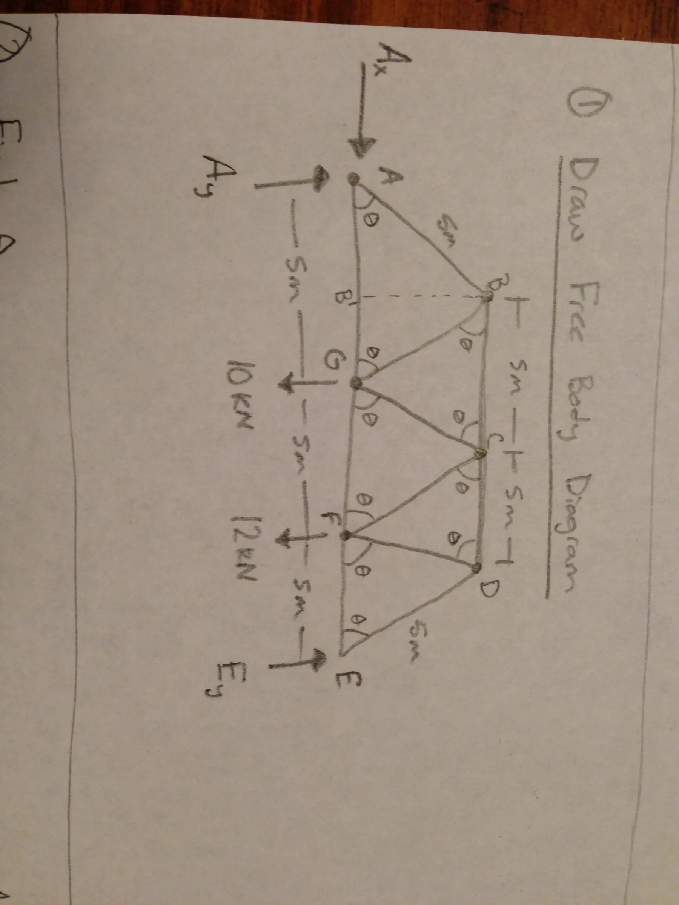
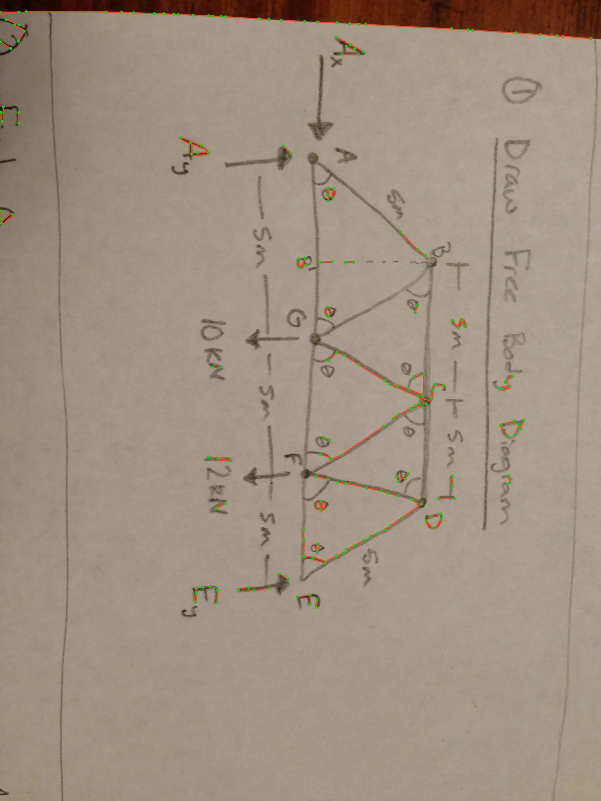

Review sheet: test1.jpg
image/webp · 1800 × 2400 px · 109,870 bytes · OpenCV candidates: 153
Human-review status: REQUIRED — NOT REVIEWED. No ground-truth geometry is present for this dataset item.
Mock proposal only: The orange triangle is deterministic test-fixture data returned to test the interface. It is not inferred from, or a proposed interpretation of, this image. Do not compare it with the sketch or treat it as a label.


{
"proposal_only": true,
"test_fixture": "Synthetic triangle; not derived from this sketch",
"image_width": 1800,
"image_height": 2400,
"joint_count": 3,
"member_count": 3,
"review_status": "pending_review"
}